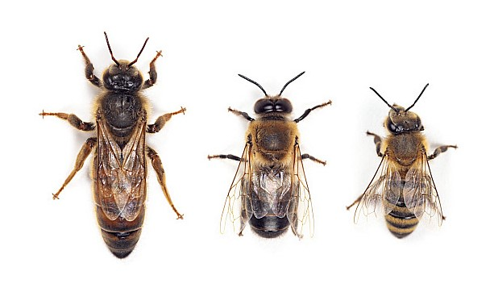

Bee Anatomy
Bees have a unique body structure that allows them to efficiently collect pollen and nectar. Their body is divided into three main parts: the head, thorax, and abdomen. The head houses important sensory organs like large compound eyes for seeing and antennae for detecting smells. The thorax is where the legs and wings attach, enabling bees to fly and gather pollen. Each leg has special hairs for collecting pollen. The abdomen contains vital organs and the stinger in females, used for defense. Bees are perfectly adapted for their role in nature, using every part of their anatomy to help pollinate plants and produce honey.

Bee Sexes
Queen Bee: (left)
The queen is the only fertile female in the hive. Her primary role is to lay eggs, and she can lay up to 2,000 eggs per day during peak season. The queen also releases pheromones that help maintain the social order of the hive. Queens are larger than other bees, with a longer abdomen and smoother body.
Drone Bee: (middle)
Drones are male bees, and their sole purpose is to mate with a queen from another colony. They do not have stingers and do not contribute to gathering food or defending the hive. After mating, drones die, and those that don’t mate are often expelled from the hive in colder months.
Worker Bee: (right)
Workers are sterile females and make up the majority of the colony. They perform all the tasks necessary to maintain the hive, including foraging for nectar and pollen, feeding larvae, building and cleaning the hive, and defending it from intruders. Worker bees have stingers but can only sting once, after which they die.

Bee Life Cycle
Egg Stage:
The queen bee lays a single egg in each cell of the honeycomb. The eggs are tiny, white, and oval-shaped. They remain in this stage for about three days before hatching into larvae.
Stage:
After hatching, the egg becomes a larva, a small, white, worm-like creature. Worker bees feed the larvae with royal jelly for the first few days, and after that, a mixture of honey and pollen. The larvae grow rapidly, shedding their skin several times as they increase in size. This stage lasts about 6 to 10 days, depending on the type of bee (queen, worker, or drone).
Pupa Stage:
Once fully grown, the larva spins a cocoon around itself, entering the pupal stage. The cell is capped with wax by the worker bees, and inside, the larva undergoes metamorphosis. During this stage, the bee begins to develop its legs, wings, eyes, and other adult features. This transformation takes about 7 to 14 days.
Adult Bee: